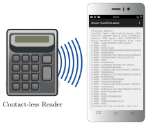

The Android Smart Card Emulator allows the emulation of a contact-less smart card. The emulator uses Android’s HCE to fetch APDUs from a contact-less reader. The app allows to process the Command APDUs either by delegating them to a remote virtual smart card or by a built-in Java Card simulator. The response APDUs are then returned to the smart card reader. Together with Tizen Smart Card Emulator it is also possible to use a smartwatch as communication device instead of the phone.
With the built-in Java Card runtime of jCardSim [1] the app includes the following Applets:
The remote interface can be used together with the Virtual Smart Card, which allows emulating the following cards:
The remote interface can also be used together with the PC/SC Relay, which allows emulating a contactless card from an existing contact-based card (by relaying the commands from PC/SC to the phone).
You may also attach your own simulation to the remote interface by implementing a simple interface through a socket communication.

Simulate a contact-less Java Card with Android Smart Card Emulator
![\input{$wd/bilder/tikzstyles.tex}
\node (reader) {\includegraphics[width=3cm]{$wd/bilder/my_cardreader.pdf}};
\node [below=0cm of reader, kleiner] {Contact-less Reader};
\node (phone) [right=1cm of reader] {\includegraphics[width=3cm]{$wd/bilder/smartphone.pdf}};
\node (app) [at=(phone.center)] {\includegraphics[width=2.8cm, height=4.9cm]{$wd/bilder/ACardEmulator.png}};
\node (vicc) [aktivbox, right=2cm of phone, kleiner] {\texttt{vicc --reversed}};
\begin{pgfonlayer}{background}
\draw [rfid] (reader.center) -- (phone.west) ;
\path[linie] (phone) edge node {\includegraphics[width=1.5cm]{$wd/bilder/simplecloud.pdf}} (vicc) ;
\end{pgfonlayer}](../_images/tikz-ae1e764f23cec8b5d67952bc6d8bbe66280e80d1.svg)
Simulate a contact-less smart card with a remote virtual smart card
![\input{$wd/bilder/tikzstyles.tex}
\node (reader) {\includegraphics[width=3cm]{$wd/bilder/my_cardreader.pdf}};
\node [below=0cm of reader, kleiner] {Contact-less Reader};
\node (phone) [right=1cm of reader] {\includegraphics[width=3cm]{$wd/bilder/smartphone.pdf}};
\node (app) [at=(phone.center)] {\includegraphics[width=2.8cm, height=4.9cm]{$wd/bilder/ACardEmulator.png}};
\node (pcsc-relay) [aktivbox, right=2cm of phone, kleiner] {\texttt{pcsc-relay --emulator=vpcd}};
\node (card) [below=.5cm of pcsc-relay)] {\includegraphics[width=0.8cm]{$wd/bilder/smartcard.pdf}};
\node (reader2) [below=1cm of pcsc-relay] {\includegraphics[width=1.3cm]{$wd/bilder/my_cardreader.pdf}};
\begin{pgfonlayer}{background}
\draw [rfid] (reader.center) -- (phone.west) ;
\path[linie] (phone) edge node {\includegraphics[width=1.5cm]{$wd/bilder/simplecloud.pdf}} (pcsc-relay) ;
\path[linie] (pcsc-relay) edge (reader2) ;
\end{pgfonlayer}](../_images/tikz-30c9c7049675e5b06e8364c63b0718d51986e380.svg)
Relaying a contact-based smart card with pcsc-relay
The Android Smart Card Emulator has the following dependencies:
Please note that the currently emulated applets are verifying the PIN by transmitting it without any protection between card and terminal. You may want to have a look at Erik Nellesson’s Virtual Keycard [7], which uses the PACE protocol for PIN verification.
The Android Smart Card Emulator is available on F-Droid [8].

To manually compile the app you need to fetch the sources and initialize the submodules:
git clone https://github.com/frankmorgner/vsmartcard.git
cd vsmartcard
# fetch the applets that are in the submodules
git submodule init
git submodule update
We use Android Studio [9] to build and deploy the application. Use File ‣ Open to select vsmartcard/ACardEmulator. Attach your smartphone and choose Run ‣ Run ‘app’.
Do you have questions, suggestions or contributions? Feedback of any kind is more than welcome! Please use our project trackers.
| [1] | http://www.jcardsim.org/ |
| [2] | https://github.com/licel/jcardsim/blob/master/src/main/java/com/licel/jcardsim/samples/HelloWorldApplet.java |
| [3] | https://developers.yubico.com/ykneo-openpgp/ |
| [4] | https://developers.yubico.com/ykneo-oath/ |
| [5] | http://www.pwendland.net/IsoApplet/ |
| [6] | https://github.com/vletoux/GidsApplet |
| [7] | https://github.com/eriknellessen/Virtual-Keycard |
| [8] | https://f-droid.org/repository/browse/?fdid=com.vsmartcard.remotesmartcardreader.app |
| [9] | http://developer.android.com/sdk/installing/studio.html |